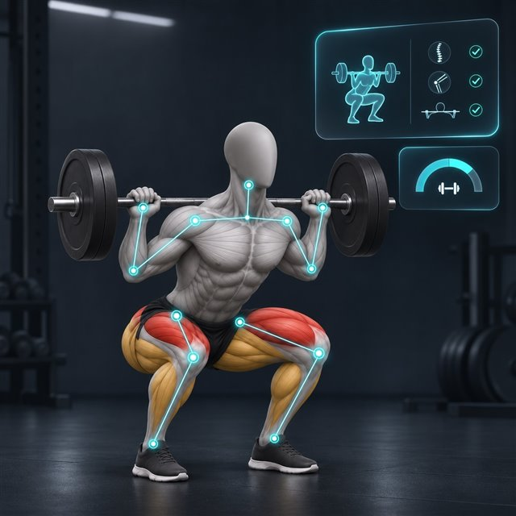

01 · 내 기준
내 목표를 정해요
운동 목표와 가능한 주간 횟수를 입력해요. 키와 체중은 필요할 때 추가할 수 있고, 언제든 수정할 수 있어요.
화면에서 따라하기홈 → 프로필 설정에서 목표와 주간 횟수 입력 → 저장
내 운동 기준
체중 관리주 3회
가능한 횟수로 시작수정 가능
필요한 기능만 짧게 살펴보고, 오늘 할 수 있는 것부터 시작해요.
운동 목표와 가능한 주간 횟수를 입력해요. 키와 체중은 필요할 때 추가할 수 있고, 언제든 수정할 수 있어요.
화면에서 따라하기홈 → 프로필 설정에서 목표와 주간 횟수 입력 → 저장
추천 루틴을 그대로 따라도 되고, 오늘 운동하고 싶은 부위를 직접 선택해도 돼요. 지난 기록을 바탕으로 무게를 제안해요.
화면에서 따라하기하단 운동 → 부위 선택 → 운동 추가 → 세트 기록 후 저장
운동 화면에서 카메라 자세 체크를 열 수 있어요. 관절 움직임과 반복 횟수를 간단히 살피는 보조 기능이에요.
화면에서 따라하기하단 운동 → 자세 체크 → 카메라 안내 확인 → 시작

한 끼에 먹은 음식을 여러 개 추가하고, 분량을 확인한 뒤 한 번에 저장해요. 메모는 마지막에 남겨요.
화면에서 따라하기하단 식단 → 기록하기 → 음식과 양 추가 → 한 끼 저장
사진은 첨부할 수 있지만 자동 음식 분석은 현재 사용할 수 없어요. 영양 목표에는 가장 최근 입력한 체중과 기초대사량을 참고해요. 체중 변화 추세로 식단을 처방하는 기능은 아니에요.
현미밥 · 닭가슴살 · 샐러드
운동일지에서 날짜별 기록을 보고, 무게와 횟수가 어떻게 달라졌는지 살펴볼 수 있어요.
화면에서 따라하기하단 기록 → 달력 날짜 선택 → 운동·식단 기록과 변화 확인
트레이너 화면을 열면 다음 수업과 최근 회원 기록이 먼저 나옵니다. 수업의 ‘일지 시작’을 누르면 바로 수업일지로 이동해요.
화면에서 따라하기화면 선택 → 트레이너 → 다음 수업 → 일지 시작
회원 검색에서 이름을 찾고 상세 화면에서 공유된 운동·식단 및 주·월 리포트를 확인하세요. 회원이 허용한 정보만 표시돼요.
직접 정한 식사는 남겨두고 나머지 끼니를 추천받아요. DB 음식과 분량을 추가하고, 남은 목표에 맞춰 조절한 뒤 완성·저장하세요.
화면에서 따라하기하단 식단 → 이번 주 식단표 → 직접 식사 입력 → 빈칸 추천 → 완성·저장
추천 결과의 음식과 분량을 확인하고 수정해요. 목표는 참고 추정치이며, 못 먹는 음식과 실제 식사 상황을 먼저 고려하세요.
서버 저장을 허용한 기록은 로그인한 계정에 저장돼요. 다른 기기에서도 같은 계정으로 확인하세요.
화면에서 따라하기상단 저장 상태 확인 → 다른 기기에서는 같은 계정으로 로그인
다른 기기에서 먼저 수정한 내용이 있으면 덮어쓰지 않고 알려드려요. 현재 입력을 복사해 둔 뒤 화면을 다시 열어 최신 기록을 확인하세요. 기기 전용 항목은 별도 안내를 확인해주세요.
별도 PWA 파일을 받지 않아도 돼요. 휴대폰 브라우저에서 페이스핏을 홈 화면에 추가하면 앱처럼 열 수 있어요.
카카오톡 등 앱 안의 브라우저 대신 Chrome 또는 Safari에서 사이트를 다시 열어보세요. 설치 후 홈 화면의 페이스핏 아이콘을 누르면 됩니다. 저장한 기록을 다른 기기에서 보려면 같은 계정으로 로그인하세요.
설치는 선택 사항이에요. 인터넷 연결과 로그인은 사용하는 기능에 따라 필요할 수 있어요.
필요할 때 화면 상단의 ‘이용 가이드’를 눌러 다시 확인할 수 있어요.